Modelli di dispositivi controllati
Dopo essere stati introdotti ai vari modelli di impianti che incontriamo frequentemente in varie applicazioni, siamo ora ben pronti per approfondire il sistema completo di controllo del feedback. Di conseguenza, la nostra attenzione con questo notebook è rivolta ai modelli di dispositivi controllati, nonché ai sistemi completi che costruiremo utilizzando questi dispositivi.
Rivisitazione dei modelli di impianti
Per essere sicuri di avere delle basi chiare, rivediamo lo scenario rispetto ai modelli di impianto che abbiamo modellato attraverso funzioni di trasferimento e diagrammi a blocchi.
| 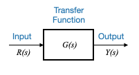 |
Questo diagramma incapsula la dinamica dell’impianto attraverso una funzione di trasferimento, \(G(s)\). L’input dell’impianto, indicato come \(R(s)\), produce un output, \(Y(s)\). Questa uscita, chiamata anche variabile controllata del sistema, sarà sempre il risultato della moltiplicazione della funzione di trasferimento \(G(s)\) per l’ingresso \(R(s)\).
\[ Y(s) = G(s)R(s) \]
Questa equazione fornisce una rappresentazione matematica nel dominio di trasformazione dell’impianto, che funge da sottosistema nel sistema di controllo generale che esploreremo presto.
Domanda pop-up: Nell’equazione \(Y(s) = G(s)R(s)\), dove \(Y(s) =\frac{1}{s+1}\) e \(R( s)=1\), quanto sarebbe \(Y(s)\)?
Risposta: \(\frac{1}{s+1}\)
Cascata di blocchi
Supponiamo ora di avere due blocchi, \(G_1(s)\) e \(G_2(s)\).

|
Se \(R(s)\) è l’input del primo blocco e \(Y(s)\) è l’output dell’intero setup e \(X(s)\) è il segnale tra i due blocchi, possiamo affermare:
\[ \begin{align} X(s) &= G_1(s)R(s)\\ Y(s) &= G_2(s)X(s)\\ \end{align} \]
Combinando queste equazioni, otteniamo:
\[ Y(s) = G_1(s) \cdot G_2(s) \cdot R(s) \]
Ciò dimostra che quando due blocchi (o sottosistemi) sono collegati in cascata, le loro funzioni di trasferimento possono essere moltiplicate per accertare la relazione tra l’input e l’output.
Nodi sommatori e punti di diramazione
Abbiamo spesso visto cerchi insieme a segni algebrici nei nostri diagrammi a blocchi. Questi denotano rilevatori di errori o giunzioni o nodi sommatori.
| 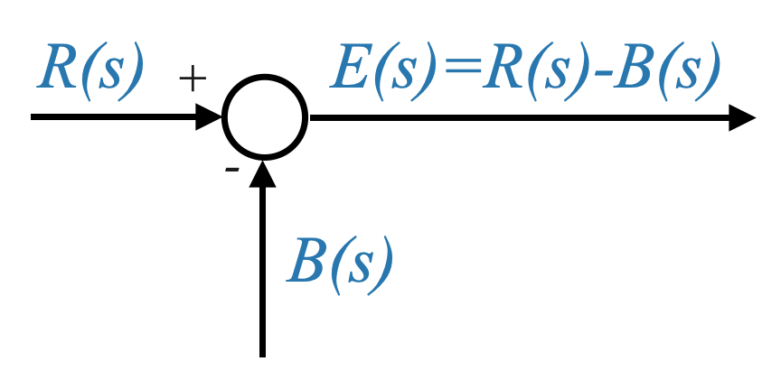 |
Ad esempio, se \(R(s)\) e \(B(s)\) sono segnali in corrispondenza di un incrocio, il segnale risultante \(E(s)\) viene calcolato come:
\[E(s)=R(s)−B(s)\]
o \(E(s)=R(s)+B(s)\) se i segnali vengono sommati.
Questa rappresentazione simbolica funge da metodo conveniente per rappresentare manipolazioni algebriche di più segnali.
In alcuni casi, potremmo voler attingere a un segnale per ottenere feedback. Tali diramazioni (o branch-off) sono stati illustrati nei nostri diagrammi attraverso ramificazioni su una linea di segnale principale. Ciò garantisce che il valore del segnale restituito rimanga coerente.

|
Per riassumere, qualsiasi sistema può essere rappresentato in modo completo utilizzando una combinazione di questi quattro elementi fondamentali del diagramma a blocchi: un blocco base, blocchi in cascata, giunzioni sommatrici e punti di diramazione.
Sistema di livello del liquido: uno sguardo dettagliato
Per fornire ulteriore chiarezza, parliamo di un sistema di livello del liquido.

|
Quando modelliamo un singolo serbatoio, ci preoccupiamo principalmente della dinamica tra afflusso, deflusso e altezza del liquido. Il modello più comune e semplificato si basa sull’equilibrio del volume del liquido, considerando le velocità di afflusso e deflusso.
Assunzioni base:
- La sezione trasversale del serbatoio è costante.
- Il liquido nel serbatoio sia ben miscelato e abbia una densità uniforme.
- La velocità di deflusso dipende dall’altezza del liquido (a causa della pressione gravitazionale).
L’obiettivo principale di questo sistema è controllare l’altezza del liquido all’interno di un serbatoio. Quando modelliamo un serbatoio di questo tipo, spesso deriviamo un modello di sistema del primo ordine, con la dinamica del serbatoio sintetizzata da un guadagno di sistema e da una costante di tempo.
\[ \frac{H_1(s)}{Q_i(s)} = \frac{\frac{R_1}{\rho g}}{\tau_1 s+1} \]
Dove:
- \(H(s)\) è la trasformata di Laplace dell’altezza del liquido \(h(t)\).
- \(Q_i(s)\) è la trasformata di Laplace del tasso di afflusso \(q_in(t)\).
- \(\rho\) è la densità del liquido
- \(g\) è l’accelerazione dovuta alla gravità.
- \(R\): resistenza al flusso, tipicamente determinata dalla dimensione e dalla forma dell’uscita.
Consideriamo due serbatoi. L’input del secondo serbatoio proviene dall’output del primo serbatoio. Utilizzando i nostri modelli derivati in precedenza e se consideriamo il flusso in ingresso e l’altezza del liquido, possiamo determinare la relazione tra i serbatoi e le rispettive uscite.
| 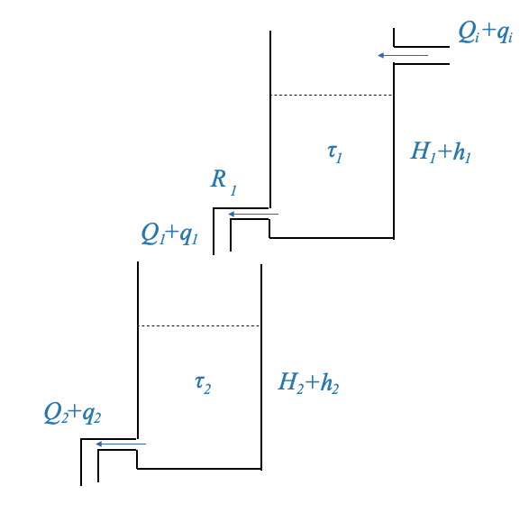 |
Possiamo modellare il secondo serbatoio come abbiamo fatto per il primo:
\[ \frac{H_2(s)}{Q_1(s)} = \frac{\frac{R_2}{\rho g}}{\tau_2 s+1} \]
possiamo rappresentare questa relazione dinamica con diagrammi a blocchi:

|
L’input per il secondo sistema è \(Q_1(s)\). Tuttavia:
\[ q_1 = \frac{p_1}{R_1} \]
dove \(p_1\) è la pressione all’uscita del primo serbatoio, e la pressione totale è \(\bar{p_1}+p_1\), e \(\bar{p_1}\) è la pressione statica.
Possiamo quindi scrivere:
\[ q_1 = \frac{p_1}{R_1} = \frac{\rho g h_1}{R_1} \]
Ed è così che possiamo mettere in relazione \(Q_1\) e \(H_1\), ma notiamo che l’output del primo serbatoio, secondo il nostro modello è \(H_1\) e non \(Q_1\), la seconda funzione di trasferimento è diversa dalla prima.
Per il secondo sistema, l’input è \(Q_1\) (afflusso) e la variabile controllata è \(H_2\).
Tuttavia, un punto cruciale da notare è che la dinamica del secondo serbatoio non influenza la dinamica del primo serbatoio. Questa caratteristica implica che il secondo sistema non “carica” ​​il primo. Solo in tali scenari le funzioni di trasferimento dei due sistemi possono essere moltiplicate.
Tuttavia, se i serbatoi fossero collegati in modo diverso, dove la pressione del secondo serbatoio influenza il flusso del primo serbatoio, allora questo effetto di “carico” ci impedirebbe di moltiplicare semplicemente le loro funzioni di trasferimento. Questo effetto di caricamento può alterare drasticamente la dinamica del sistema, persino trasformando un sistema del primo ordine in uno del secondo ordine.
| 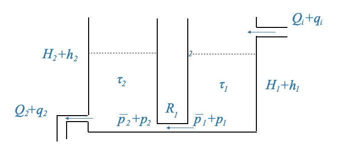 |
Se modelliamo questo caso.
La velocità di stoccaggio nel serbatoio 1 è:
\[ \begin{align} C_1\frac{dp_1}{dt} &= q_i - \frac{p_1-p_2}{R_1} \end{align} \]
e la velocità di stoccaggio nel secondo serbatoio è:
\[ \begin{align} C_2\frac{dp_2}{dt} &= q_1 - \frac{p_2}{R_2} \end{align} \]
dove \(p_2\) è la pressione del secondo serbatoio. Notare come ciò influisce sul flusso del primo serbatoio (termine più a destra nell’equazione (1) sopra), e quindi c’è un effetto di carico del secondo serbatoio sul primo.
In questo caso i due sistemi non possono essere scritti come sistemi a cascata! I due sottosistemi non sono indipendenti e non possono essere considerati due blocchi separati.
Possiamo trovare la funzione di trasferimento complessiva come (ottenuta dalle due equazioni precedenti):
\[ \frac{H_2(s)}{Q_i(s)} = \frac{\frac{R_2}{\rho g}}{\tau_1\tau_2s^2+(\tau_1 + \tau_2 + \frac{R_2}{ R_1})s + 1} \]
Si noti che mentre nei sistemi liquidi e termici abbiamo tipicamente sistemi del primo ordine, la presenza di un effetto di carico produce un sistema del secondo ordine. Negli ambienti industriali, i singoli serbatoi vengono generalmente modellati utilizzando una costante di tempo e un guadagno di sistema. Quando connesso senza carico, la funzione di trasferimento del sistema rimane di secondo ordine, ma è rappresentata da due costanti di tempo distinte. Al contrario, quando connesso in modalità di caricamento, la funzione di trasferimento del sistema è ancora del secondo ordine, ma caratterizzata da un ritardo quadratico.
Per ribadire e sottolineare: nelle nostre rappresentazioni del diagramma a blocchi, se rappresentiamo due sistemi, \(G_1\) e \(G_2\), in cascata, è implicito che \(G_2\) non carica \(G_1\). Questo è un presupposto cruciale che garantisce l’accuratezza dei nostri modelli e dei calcoli successivi.
Si possono avere opportuni ammortizzatori (elettrici, idraulici, termici, ecc.) per evitare l’effetto di carico e le due funzioni di trasferimento possono essere considerate indipendentemente. Se ciò non è possibile allora i due sistemi dovranno essere considerati insieme e saranno rappresentati da un’unica funzione di trasferimento.
Barra laterale - Modellazione di un singolo serbatoio
Quando modelliamo un singolo serbatoio, ci preoccupiamo principalmente della dinamica tra afflusso, deflusso e altezza del liquido. Il modello più comune e semplificato si basa sull’equilibrio del volume del liquido, considerando le velocità di afflusso e deflusso.
Assunzioni base:
- L’area della sezione trasversale del serbatoio è costante.
- Il liquido nel serbatoio è ben miscelato e ha una densità uniforme.
- La velocità di deflusso dipende dall’altezza del liquido (a causa della pressione gravitazionale).
Rappresentazione matematica:
Definiamo le seguenti variabili:
- $ h(t) $: altezza del liquido al tempo $ t $.
- $ A $: area della sezione trasversale del serbatoio.
- $ Q_{in}(t) $: tasso di afflusso al tempo $ t $.
- $ Q_{out}(t) $: tasso di deflusso al tempo $ t $.
- $ $: densità del liquido.
- $ g $: accelerazione dovuta alla gravità.
- $ R $: resistenza al flusso, tipicamente determinata dalla dimensione e dalla forma dell’uscita.
Dal principio di conservazione della massa:
\[ A \frac{dh(t)}{dt} = Q_{in}(t) - Q_{out}(t) \]
Utilizzando la legge di Torricelli, la portata di deflusso, $ Q_{out}(t) $, dal serbatoio attraverso un orifizio può essere correlata all’altezza del liquido:
\[ Q_{out}(t) = \frac{\rho g h(t)}{R} \]
Sostituisci la velocità di deflusso nell’equazione di conservazione della massa:
\[ A \frac{dh(t)}{dt} = Q_{in}(t) - \frac{\rho g h(t)}{R} \]
Questa è un’equazione differenziale del primo ordine che rappresenta la dinamica del serbatoio. Mette in relazione la velocità di variazione dell’altezza del liquido con l’afflusso e l’altezza stessa. La soluzione di questa equazione, date le opportune condizioni iniziali, ti darà l’altezza del liquido nel serbatoio in funzione del tempo.
Modello di funzione di trasferimento:
Nella teoria del controllo, è spesso utile descrivere i sistemi nel dominio della frequenza utilizzando una funzione di trasferimento. La funzione di trasferimento del serbatoio può essere derivata prendendo la trasformata di Laplace dell’equazione differenziale. Assumendo condizioni iniziali pari a zero e denotando la variabile della trasformata di Laplace come $ s $:
\[ A s H(s) = Q_{in}(s) - \frac{\rho g}{R} H(s) \]
Dove: - $ H(s) $ è la trasformata di Laplace dell’altezza del liquido $ h(t) $. - $ Q_{in}(s) $ è la trasformata di Laplace della portata di afflusso $ Q_{in}(t) $.
Riordinare e risolvere la funzione di trasferimento $ G(s) = $:
\[ G(s) = \frac{A}{As + \frac{\rho g}{R}} \]
Questa funzione di trasferimento mette in relazione l’altezza del liquido con la velocità di afflusso nel dominio della frequenza.
Riorganizzare i termini:
\[ A \frac{dh(t)}{dt} + \frac{\rho g h(t)}{R} = Q_{in}(t) \]
Consideriamo ora la trasformata di Laplace di entrambi i membri. Supponendo condizioni iniziali pari a zero:
\[ A s H(s) + \frac{\rho g}{R} H(s) = Q_{in}(s) \]
Fattorizza \(H(s)\):
\[ H(s) \Big( A s + \frac{\rho g}{R} \Big) = Q_{in}(s) \]
che porta:
\[ G(s) = \frac{H(s)}{Q_{in}(s)} = \frac{1}{\Big( A s + \frac{\rho g}{R} \Big)} \]
Ora, il guadagno di stato stazionario del sistema, quando \(s=0\), è:
\[ \frac{1}{\frac{\rho g}{R}} = \frac{R}{\rho g} \]
Impostando \(A=\tau\) - la costante di tempo τ è uguale all’area della sezione trasversale \(A\) del serbatoio, otteniamo:
\[ \frac{H(s)}{Q_{in}(s)} = \frac{\frac{R}{\rho g}}{\tau s+1} \]
— FINE DELLA BARRA LATERALE
Fondamenti del diagramma a blocchi
Prima di addentrarci nelle complessità del sistema di controllo del feedback, prendiamoci un momento per riassumere i quattro componenti principali di cui abbiamo discusso in precedenza.
- Funzione di trasferimento di base: una semplice rappresentazione della dinamica di un sistema con un input \(R\) e un output \(Y\). Questo sistema è denotato da una funzione di trasferimento \(G\).
- Cascata di blocchi: due funzioni di trasferimento, diciamo \(G_1\) e \(G_2\), disposte in serie. L’input del primo blocco è \(R\) e l’output finale del secondo blocco è \(Y\).
- Nodi sommatori: un punto nello schema a blocchi in cui due segnali vengono sommati o sottratti algebricamente. Una rappresentazione tipica include un cerchio con i segni “+” e “-”, che indicano come sono combinati i segnali in arrivo.
- Punto di diramazione: una posizione nel diagramma a blocchi in cui un segnale, ad esempio \(Y\), si dirama senza alcuna modifica. Questo viene in genere utilizzato per i cicli di feedback.
Domanda pop-up: Perché abbiamo bisogno di un punto di diramazione in un sistema di controllo in feedback?
Risposta: il punto di diramazione ci consente di utilizzare l’output del sistema (o una sua versione elaborata) per essere reimmesso nel sistema, in genere per il confronto con il segnale di riferimento o di comando.
Una panoramica del sistema di controllo del feedback
Consideriamo ora lo schema a blocchi completo di un generico sistema di controllo in feedback:

|
- Segnale di comando: \(y_r\) è il segnale desiderato o di setpoint.
- Elementi di ingresso di riferimento: questi elementi trasformano il segnale di comando in un segnale di riferimento \(r\), utilizzando una funzione di trasferimento \(A(s)\). Ad esempio, la temperatura desiderata (\(y_r\)) viene convertita in una tensione (\(r\)).
- Rilevatore di errori: Si tratta di una giunzione di somma in cui il segnale di riferimento \(r\) e il segnale di feedback \(b\) vengono combinati algebricamente per produrre il segnale di errore di attuazione \(\hat{e}\).
- Controller: indicato con \(D(s)\), questo blocco elabora il segnale di errore per generare un segnale di controllo \(u\).
- Attuatore: rappresentato da \(G_A(s)\), è il muscolo del sistema che amplifica o modifica il segnale di controllo per produrre la variabile manipolata \(m\).
- Impianto: questo è il sistema principale che vogliamo controllare, rappresentato da \(G_P(s)\). L’output dell’impianto è la variabile controllata \(y\).
- Sensore: Il sensore, caratterizzato da \(H(s)\), misura la variabile controllata e produce un segnale di feedback \(b\). Ad esempio, l’uscita (\(y\)) può essere la temperatura e il blocco sensore la converte in tensione (\(b\)).
- Disturbo: \(w\) è un input indesiderato che può influenzare l’output del sistema. Può accadere ovunque, ma lo modelliamo come se entrasse nel sistema in un punto di somma prima dell’impianto.
Commenti
Andando avanti, ometteremo il sottosistema \(Z(s)\) responsabile della produzione della variabile controllata indirettamente. Dato che non gioca un ruolo all’interno del ciclo di feedback, la nostra attenzione primaria sarà rivolta alla variabile controllata \(y\).
Attuazione ed errore di sistema: la differenza tra \(\hat{e}\) e \(e\) è cruciale. Mentre \(\hat{e}\) è il segnale che eccita il controllore, cioè la differenza tra \(b\) e \(r\); \(e\) è l’errore reale tra la variabile controllata \(y\) e il segnale di comando \(y_r\). È importante capire che \(b\ne y\). Il nostro obiettivo principale in un sistema di feedback è ridurre al minimo \(e\), portando l’output del sistema vicino al setpoint desiderato.
Noi chiamiamo: - \(e=y-y_r\), il segnale di errore del sistema. - \(\bar{e} = r-b\), è il segnale di errore di attuazione.
La differenza tra i due segnali dipende dagli specifici \(A(s)\) e \(H(s)\).
Diagramma a blocchi standard per la progettazione del feedback
Per facilità di analisi, possiamo riorganizzare lo schema a blocchi.

|
In questo diagramma: - La funzione di trasferimento tra \(Y\) e \(W\) è \(G_P(s)\). - La funzione di trasferimento tra \(Y\) e \(U\) è \(G_A(s)G_P(s)\).
Un comodo diagramma a blocchi
Possiamo anche manipolare il diagramma per ulteriore comodità.

|
In questo diagramma: - La funzione di trasferimento tra \(Y\) e \(W\) è \(N(s)\). - La funzione di trasferimento tra \(Y\) e \(U\) è \(G_A(s)G_P(s)\).
Impostando \(N(s)=G_P(s)\), entrambi i diagrammi diventano identici. Di conseguenza, la posizione della giunzione di somma diventa irrilevante. Inoltre, i due sottosistemi, \(G_A(s)\) e \(G_P(s)\) possono essere combinati per formare una funzione di trasferimento unificata rappresentata come \(G=G_A(s)G_P(s)\).
Il diagramma diventa:

|
Man mano che avanziamo sempre più nel regno dei sistemi di controllo, la nostra rappresentazione visiva dei sistemi – i diagrammi a blocchi – diventa indispensabile. Questi diagrammi sono rappresentazioni simboliche delle equazioni matematiche che descrivono il nostro sistema. Ma come ogni lingua, esistono molti modi per trasmettere lo stesso messaggio. Pertanto, è spesso necessario manipolare i nostri diagrammi a blocchi per chiarezza o comodità.
Domanda pop: manipolare il diagramma a blocchi in modo che il blocco \(A(s)\) non appaia nel percorso in avanti. - Suggerimento: il segnale \(\hat{e}\) deve essere lo stesso in entrambi i casi.
Risposta: \(\hat{e} = Ay_r - Hy\). Se dovessimo calcolare il segnale controllato \(u\) in questa configurazione, sarebbe:
\[ u = GI_r − DHy\]
Questa equazione descrive la relazione tra il segnale di comando (\(y_r\)), il segnale controllato (\(u\)) e l’uscita (\(y\)).
Se spostiamo il sottosistema \(A(s)\) dopo la giunzione di sommatoria:
| 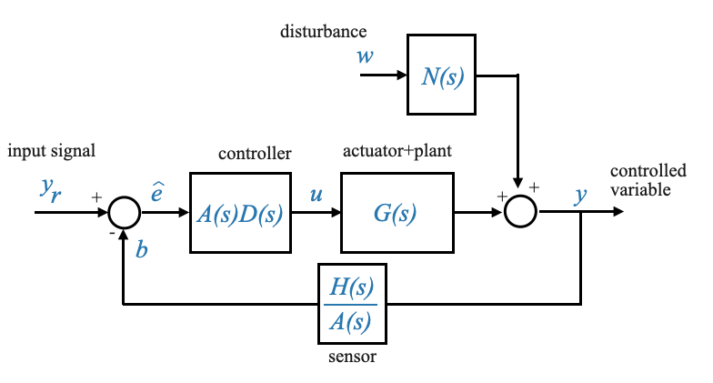 |
In questa versione modificata, il nostro segnale controllato \(u\) può essere espresso come:
\[ u = ADy_r - \frac{H}{A}ADy \]
Il confronto di queste due equazioni conferma l’equivalenza di entrambi gli schemi a blocchi. Le trasformazioni che abbiamo applicato per passare dallo schema iniziale a quello semplificato sono puramente simboliche, ma presentano il sistema in una maniera più digeribile. Lo facciamo perché il sistema risultante diventa più conveniente.
Nota: - In quest’ultimo diagramma possiamo dire \(y_r=r\) perché non esiste un elemento di riferimento esplicito. Spostando il blocco \(A\) all’interno del circuito di feedback, la rappresentazione matematica sarebbe identica e potremmo dire \(y_r=r\). Nota che fisicamente potrebbe non avere alcun senso, ma le equazioni matematiche sarebbero le stesse.
- Se \(H=A\) allora il segnale in uscita dalla giunzione di sommatoria diventa \(e=y_r-y\). In tutti gli altri casi è \(\hat{e}\).
Domanda popup: Perchè è fondamentale confermare l’equivalenza dei due schemi a blocchi?
Risposta: Confermare l’equivalenza garantisce che le nostre semplificazioni o manipolazioni non alterino inavvertitamente il comportamento del sistema. Le prestazioni e la risposta del sistema dovrebbero rimanere invariate indipendentemente dalla sua rappresentazione.
Sistema di feedback unitario
Un’ulteriore trasformazione può portarci a quello che viene definito “Unity Feedback System”.
Quando \(H(s)\) corrisponde a \(A(s)\) — il che significa che la funzione di trasferimento del sensore si allinea con la funzione di trasferimento di riferimento (uno scenario che potrebbe essere progettato intenzionalmente) — lo schema a blocchi diventa più snello:

|
Questo schema a blocchi è di fondamentale importanza. Spesso possiamo adattare il sistema per allinearlo a questa rappresentazione, rendendolo particolarmente vantaggioso per considerazioni di progettazione. Per via della sua importanza, viene chiamato “sistema di feedback unitario”.
Il termine “unità” qui non implica necessariamente che la funzione di trasferimento del sensore H(s)H(s) sia unità (o 1). Piuttosto, attraverso un’attenta manipolazione e in determinate condizioni (come \(H=A\)), possiamo arrivare a una rappresentazione del diagramma a blocchi che sembra implicare un feedback diretto senza alcuna trasformazione. Ma ricorda, questa è solo una rappresentazione.
Un malinteso comune è credere che il segnale \(y\) venga restituito direttamente alla giunzione di sommatoria senza l’intervento di un sensore, o presupponendo che la funzione di trasferimento del sensore sia sempre 1. Tuttavia, questo non è necessariamente vero. Sebbene la funzione di trasferimento del sensore possa effettivamente essere 1, può anche esserci una funzione di trasferimento del sensore distinta \(H\). Selezionando giudiziosamente la funzione di trasferimento del riferimento, è possibile ottenere la struttura di feedback unitario.
Il diagramma a blocchi del feedback di progettazione
Tenendo a mente le discussioni precedenti possiamo semplificare ulteriormente il nostro diagramma a blocchi per ottenere una forma che sarà molto utile quando si progettano sistemi di controllo feedback:

|
All’interno di questo modello, i blocchi \(D\), \(G\) e \(H\) hanno una portata ampia e rappresentano gli effetti cumulativi di tutti gli elementi lungo i rispettivi percorsi. È essenziale riconoscere che questi blocchi potrebbero non rispecchiare direttamente i singoli componenti fisici. Spesso emergono da semplificazioni strategiche e riarrangiamenti delle equazioni fondamentali del sistema.
Per approfondire:
\(D(s)\) indica principalmente la funzione di trasferimento del titolare del trattamento. Anche se il controller gioca un ruolo fondamentale in questo blocco, la sua composizione potrebbe riflettere anche altri aggiustamenti del sistema.
\(G(s)\) amalgama la dinamica sia dell’impianto che degli attuatori. Nonostante la sua natura composita, continueremo a chiamarla “Pianta” per via della sua influenza predominante.
\(H(s)\), invece, non si limita a rappresentare solo la funzione di trasferimento del sensore. Dato il suo ruolo più ampio, è più appropriatamente descritta come la “funzione di trasferimento del percorso di feedback”.
Si noti che in questo schema a blocchi è presente solo il segnale di errore di attuazione \(\bar{e}\). Il segnale \(y_r\) non è nemmeno presente in questo diagramma a blocchi. Dovrebbe essere chiaro tuttavia che quando calcoli le prestazioni totali del tuo sistema dovresti calcolare l’errore \(e = y_r - y\). Questo errore è cruciale quando si analizzano le prestazioni del sistema, anche se non fa esplicitamente parte del nostro ciclo di feedback primario.
Domanda popup: Cosa rappresentano i blocchi \(D\), \(G\) e \(H\) nel nostro nuovo diagramma a blocchi? Risposta: rappresentano effetti e relazioni cumulativi lungo i rispettivi percorsi, non necessariamente rispecchiando direttamente i singoli componenti fisici.
I disturbi contano
Infine, un elemento cruciale da non trascurare mai è il disturbo, che rappresentiamo come \(w\).
L’essenza stessa della teoria del controllo del feedback ruota attorno ai disturbi. Se i nostri sistemi non subissero disturbi, l’intero campo del controllo del feedback potrebbe non esistere. I sistemi a circuito aperto potrebbero gestire perfettamente scenari indisturbati.

|
Questo sarà il diagramma a blocchi di feedback che utilizzeremo principalmente.
Questi diagrammi a blocchi servono a rappresentare le relazioni tra i segnali di interesse. Sono costruiti per catturare la relazione dinamica tra tutte le variabili.
Quando modelli un sistema, sarai sempre in grado di ricondurre il suo modello a uno di questi diagrammi a blocchi standard.
Domanda popup: Perché i disturbi sono cruciali nei sistemi di controllo del feedback?
Risposta: i disturbi sono cambiamenti inaspettati o imprevedibili nell’ambiente o negli input di un sistema. I sistemi di controllo del feedback sono progettati per mitigare gli effetti di questi disturbi, garantendo che il sistema funzioni come desiderato nonostante questi cambiamenti imprevisti.
Funzione di trasferimento ad anello chiuso
Considerato il nostro diagramma a blocchi standard, con \(R\) come input di riferimento e i blocchi \(D\), \(G\), \(N\) e \(H\) come definito in precedenza.
| 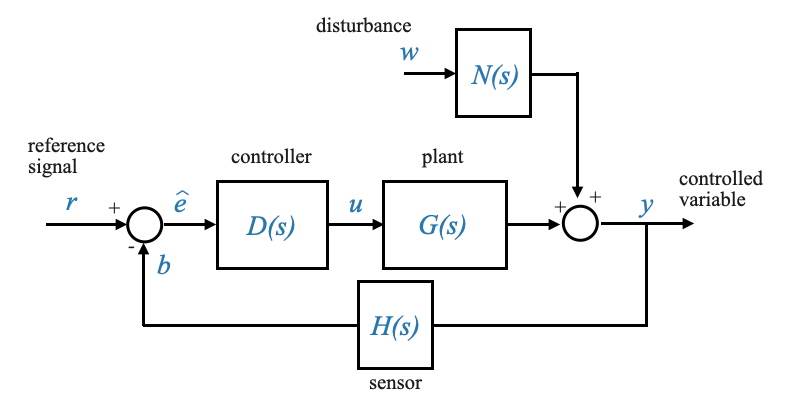 |
Ora determiniamo la funzione di trasferimento ad anello chiuso:
\[\frac{Y(s)}{R(s)}=?\]
Si noti che questo è un sistema a due ingressi e un’uscita. Dobbiamo applicare la sovrapposizione e considerare un input alla volta:
Impostazione del disturbo su zero
\[\frac{Y(s)}{R(s)}\Big|_{w=0}=\frac{D(s)G(s)}{1+D(s)G(s)H (s)} = M(s)\]
È importante notare che se il nostro sistema fosse invece un ciclo di feedback positivo, questa equazione vedrebbe un segno meno al denominatore.
Questa è chiamata Funzione di trasferimento del riferimento perché mette in relazione il riferimento \(R\) con l’output \(Y\).
Impostazione dell’ingresso di riferimento su zero
A noi interessa ora la funzione di trasferimento tra l’uscita del sistema \(Y\) e l’ingresso di disturbo \(W\), rappresentata come:
| 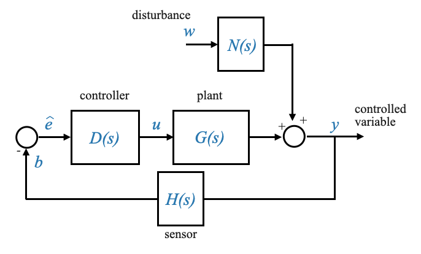 |
\[ \frac{Y(s)}{W(s)}\Grande|_{R(s)=0} = ? \]
Questa funzione di trasferimento cattura efficacemente la risposta del sistema ai disturbi. È una misura di come i disturbi esterni vengono filtrati o amplificati dalle dinamiche del sistema prima di influenzare l’output.
Per rendere il nostro compito più gestibile, possiamo semplificare il nostro diagramma a blocchi combinando gli elementi. Nello specifico, prendendo il segno negativo del rilevatore di errori e consolidandolo con il segno meno esistente, possiamo semplificare la nostra rappresentazione.
| 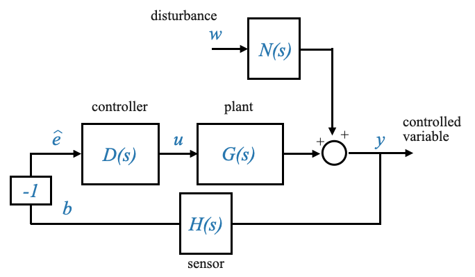 |
Da questo diagramma modificato si possono ricavare due relazioni fondamentali:
- \(\hat{E}(s) = -H(s)Y(s)\)
- \(Y(i) = D(i)G(i)\hat{E}(i) + N(i)W(i)\)
Manipolando e combinando queste equazioni, possiamo eliminare \(\hat{E}(s)\) per determinare la relazione tra \(Y(s)\) e \(W(s)\).
\[ Y(s) = -D(s)G(s)H(s)Y(s) + N(s)W(s) \]
E quindi:
\[ \frac{Y(s)}{W(s)}\Big|_{R(s)=0} = \frac{N(s)}{1+D(s)G(s)H(s) } = M_W(s) \]
Questa è chiamata Funzione di trasferimento dei disturbi.
**Notare che sia nella funzione di trasferimento del riferimento che in quella di trasferimento del disturbo il denominatore è lo stesso: \(1+D(s)G(s)H(s)\).
La funzione di trasferimento del ciclo
L’espressione:
\[ D(s)G(s)H(s) \]
è definita “funzione di trasferimento del loop”. Questo nome deriva dal fatto che rappresenta l’effetto combinato di tutte le funzioni di trasferimento presenti all’interno dell’anello di retroazione.
Domanda popup: Perché il denominatore è lo stesso sia per la funzione di trasferimento del riferimento che per quella del disturbo? Risposta: Il denominatore rappresenta la funzione di trasferimento dell’anello, che è il prodotto di tutte le funzioni di trasferimento nell’anello di feedback. Ciò rimane coerente, indipendentemente dall’input in esame.
Considerazioni conclusive sui diagrammi delle funzioni di trasferimento
La nostra esplorazione delle funzioni di trasferimento ci ha fornito due equazioni critiche:
La funzione di trasferimento del riferimento, \(M(s)\), che descrive la relazione tra l’output del sistema e l’input di riferimento. La funzione di trasferimento dei disturbi, \(M_W(s)\), che cattura la risposta del sistema ai disturbi esterni.
Con queste funzioni di trasferimento in mano, possiamo rappresentare il nostro sistema con uno schema a blocchi più compatto:
| 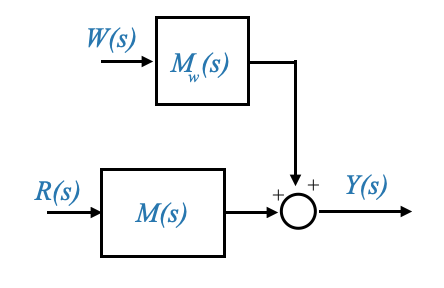 |
Questa rappresentazione condensata, che è la rappresentazione equivalente dei diagrammi a blocchi standard che abbiamo visto prima, è preziosa per l’analisi del sistema poiché collega direttamente l’uscita del sistema agli ingressi di riferimento e di disturbo. Concentrandoci su queste funzioni di trasferimento, possiamo ottenere informazioni dettagliate sul comportamento, la stabilità e le prestazioni del sistema.
Riduzione avanzata del diagramma a blocchi
Abbiamo approfondito i fondamenti dei diagrammi a blocchi e le loro procedure di riduzione. Man mano che si avanza nel campo del controllo automatico, la comprensione dei diagrammi a blocchi diventa fondamentale. Queste rappresentazioni grafiche ci consentono di visualizzare sistemi complessi, rendendone l’analisi e la progettazione più intuitive.
I diagrammi a blocchi sono più che semplici rappresentazioni schematiche di equazioni di sistema. Questi diagrammi offrono un passaggio per semplificare sistemi di controllo complessi. La loro utilità principale sta nell’aiutarci a comprendere il comportamento del sistema senza addentrarci in complesse equazioni matematiche.
L’idea è semplice: qualsiasi sistema di controllo pratico, non importa quanto complesso, può essere ridotto a uno schema a blocchi. L’essenza di questa rappresentazione, come sottolineato in precedenza, deriva dalla sua capacità di incapsulare visivamente le equazioni del sistema.
Dissezione di un sistema multi-loop
Considera una configurazione multi-loop, come presentata nel nostro esempio. Il diagramma mostra più loop, di cui il loop primario è quello in cui l’uscita controllata, \(Y\), viene restituita all’ingresso di riferimento \(R\). Questo ciclo primario è completato da numerosi circuiti di feedback minori, che rendono la struttura del sistema più complessa.

|
La sfida sta nel determinare la relazione tra \(Y\) e \(R\). Questa è la relazione di cui ho bisogno dal punto di vista del controllo.
Si noti che se ci fossero state fornite le equazioni differenziali avremmo potuto manipolarle direttamente per ottenere la relazione desiderata. In alternativa, date le equazioni possiamo scrivere lo schema a blocchi equivalente e poi manipolare lo schema a blocchi per ottenere la relazione di cui abbiamo bisogno tra qualsiasi variabile di interesse.
La sfida qui è che spesso questi diagrammi non sono immediatamente riducibili a un ciclo di feedback di base. Pertanto, potremmo aver bisogno di riorganizzare le giunzioni di somma, i punti di diramazione o persino spostare i blocchi per creare cicli di feedback di base identificabili.
Soluzione
- Identificazione del ciclo di feedback di base:
Il nostro primo compito è trasformare il sistema multi-loop in cicli di feedback di base. Un ciclo di feedback di base fornisce una relazione diretta tra input e output, facilitando un’analisi più semplice.
| 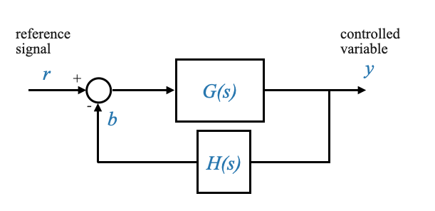 |
Figura: Ciclo di feedback di base
- Manipolazione del diagramma a blocchi: Per ora non ci sono cicli di feedback di base nel nostro diagramma.
Per ottenere un ciclo di feedback di base, potrebbe essere necessario spostare le giunzioni di somma o i punti di diramazione. L’obiettivo è identificare e isolare questi circuiti di base, rendendo il sistema più suscettibile di analisi.
- Applicazione delle formule di riduzione: Una volta identificati i cicli di feedback di base, applichiamo la formula standard:
\[ \frac{Y(s)}{R(s)}=\frac{G(s)}{1±G(s)H(s)} \]
Questa formula ci consente di ridurre un ciclo di feedback di base in un unico blocco, semplificando l’intero sistema.
- Riduzione iterativa: Il processo è iterativo. Continuiamo a identificare i cicli di feedback di base, ad applicare la formula di riduzione e a semplificare il sistema fino a ottenere la relazione desiderata tra \(Y\) e \(R\).
La procedura non è unica.
Nel nostro caso possiamo partire da:
- Se l’input del blocco \(H_2\) continua ad essere \(X\) (o l’output del blocco \(H_2\) rimane \(H_2X\), allora possiamo spostare il punto di diramazione dopo il blocco \(G_4\). Questo infatti garantisce che l’input nel resto del diagramma rimane lo stesso.
Possiamo quindi modificare il diagramma precedente in:

|
o per rendere più espliciti i punti di diramazione:
| 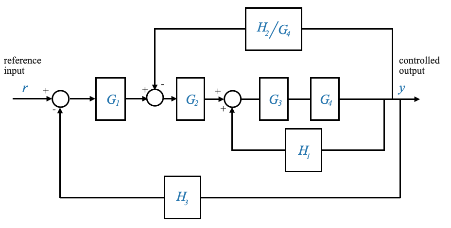 |
Quest’ultimo diagramma facilita l’identificazione del primo ciclo di feedback di base (Notare che si tratta di un ciclo di feedback positivo).
Possiamo quindi riorganizzare lo schema a blocchi come:

|
che, una volta ridotti i blocchi in cascata, possiamo scrivere come:
| 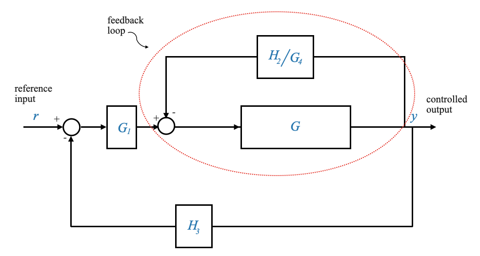 |
E ora è facile vedere i rimanenti cicli di feedback di base. Il primo è evidenziato in rosso.
Infine otteniamo:
| 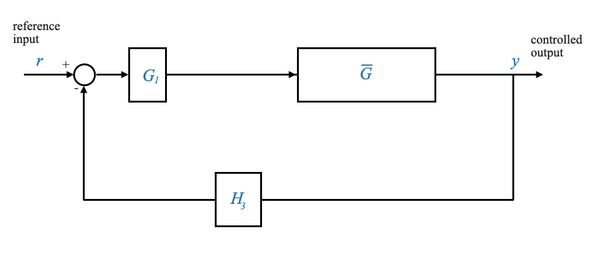 |
che possiamo ridurre ancora una volta per ottenere l’equivalente finale a ciclo chiuso:
| 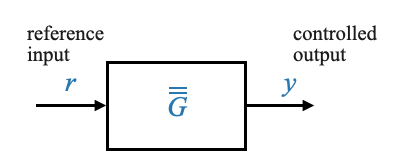 |
Domanda pop-up: due diversi diagrammi a blocchi possono rappresentare le stesse equazioni di sistema? Risposta: Sì, due diversi diagrammi a blocchi possono rappresentare le stesse equazioni di sistema se catturano le stesse relazioni e dinamiche.
Soluzione alternativa
La sequenza di riduzione non è unica. Approcci diversi potrebbero produrre lo stesso risultato. Ad esempio, lo spostamento delle giunzioni di somma può offrire un metodo alternativo di riduzione.
| 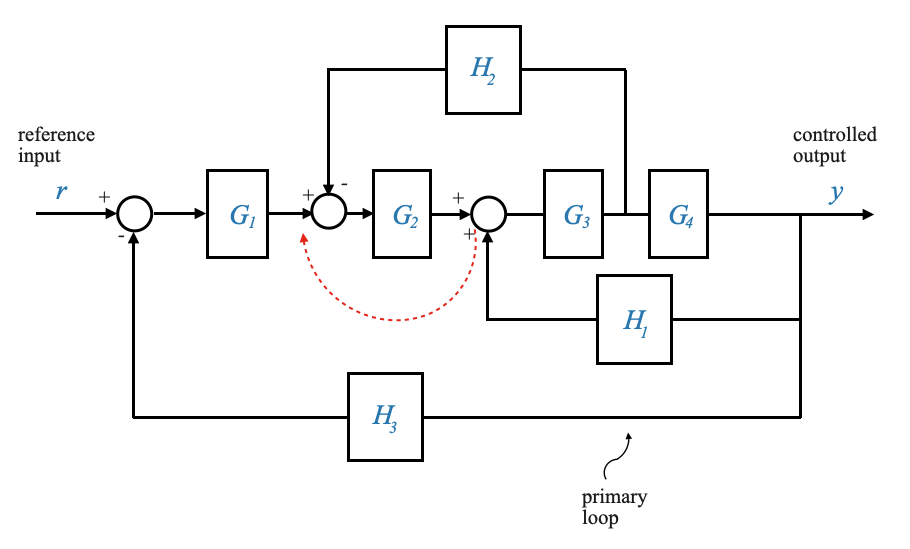 |
Per apportare questa modifica, chiamiamo il segnale che esce dal blocco \(H_1\),\(Z = H_1Y\). Poiché il segnale \(Z\) arriva come input a \(G_3\), significa che se spostiamo la somma prima del blocco \(G_2\), questo blocco contribuirà ad un ulteriore guadagno di \(G_2\). Dobbiamo prenderci cura di questo guadagno per avere una relazione equivalente e dividerlo per \(G_2\) nel percorso di feedback.

|
| 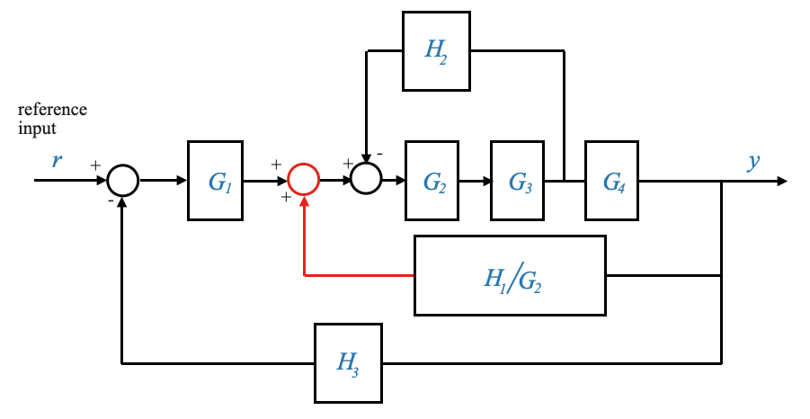 |
o anche in modo equivalente
| 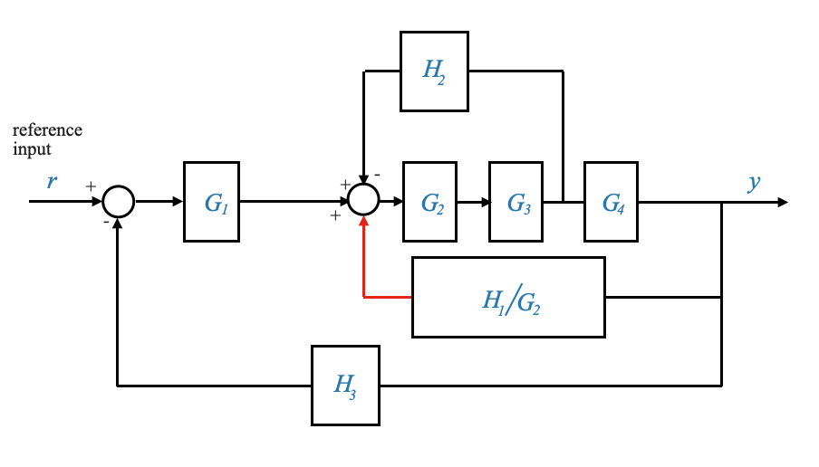 |
Possiamo farlo perché i diagrammi a blocchi non rappresentano sistemi fisici, sono una rappresentazione matematica.
In conclusione, i diagrammi a blocchi offrono un potente strumento per l’analisi e la progettazione di sistemi per il controllo automatico. Rappresentando visivamente le equazioni del sistema, facilitano la comprensione, soprattutto dei sistemi complessi.
Regole per la manipolazione del diagramma a blocchi

|
Grafici del flusso del segnale e formula del guadagno di Mason
Nel nostro viaggio per comprendere i sistemi complessi, spesso facciamo affidamento su ausili visivi per comprendere meglio relazioni complesse. Uno di questi strumenti è il diagramma del flusso del segnale (SFG), una rappresentazione grafica che ci aiuta a visualizzare il flusso dei segnali attraverso un sistema. Accoppiando l’SFG con la formula del guadagno di Mason, possiamo ricavare la trasmittanza complessiva (o funzione di trasferimento) di un sistema senza ricorrere ad estese manipolazioni del diagramma a blocchi.
In questa sezione esamineremo più da vicino la trasformazione dai diagrammi a blocchi ai grafici del flusso del segnale e come applicare la formula del guadagno di Mason alla rappresentazione risultante.
La formula del guadagno di Mason è un approccio sistematico per trovare la funzione di trasferimento di un sistema complesso rappresentato da un grafico del flusso di segnale o da un diagramma a blocchi. La formula fornisce un modo per determinare il guadagno complessivo di un sistema considerando i guadagni individuali e i circuiti all’interno del sistema. La formula del guadagno di Mason è particolarmente utile per i sistemi con più loop e percorsi che si intersecano. Torneremo su questo tra un momento. Per ora, concentriamoci sui grafici del flusso del segnale.
Dai diagrammi a blocchi ai grafici del flusso dei segnali
Prima di approfondire le complessità della formula del guadagno di Mason, è essenziale capire come convertire un diagramma a blocchi nel corrispondente grafico del flusso del segnale. Questa trasformazione non è solo fondamentale per una migliore visualizzazione, ma facilita anche l’applicazione della formula del guadagno di Mason.
Comprensione di nodi e percorsi negli SFG
In un grafico del flusso del segnale, il termine “nodo” rappresenta una variabile o un segnale, mentre le frecce o i percorsi tra i nodi rappresentano il guadagno o la trasmittanza del sistema.
Analizziamo ulteriori concetti:
- Nodo di input: un nodo senza segnali in entrata. Il valore di tale nodo è definito esternamente. Ad esempio, il nodo etichettato “R” nei nostri esempi precedenti.
- Nodo di Output: Un nodo da cui non ci sono rami in uscita. È essenzialmente il punto finale o il risultato del nostro sistema.
Costruire il grafico del flusso del segnale
Dato lo schema a blocchi, proviamo a costruire il corrispondente grafico del flusso del segnale:
- Identificare il/i nodo/i di input. Nel nostro esempio, R funge da nodo di input.
- Traccia il percorso dall’input all’output, assicurandoti di attraversare un nodo o un ramo solo una volta. Questo è ciò che definisce un “percorso in avanti”.
- Contrassegnare le trasmittanze o i guadagni lungo ciascun ramo. Ad esempio, un ramo con un guadagno di \(G1\) dovrebbe essere etichettato come tale.
Prendiamo un blocco base con ingresso \(R\) e uscita \(Y\), collegati tramite un sistema \(G\)
| 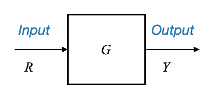 |
Dove: - \(R\) è una variabile - \(Y\) è una variabile - \(G\) è il guadagno del sistema
Possiamo costruire il grafico del flusso del segnale equivalente come:

|
In un grafico del flusso del segnale, \(R\) e \(Y\) diventano nodi e \(G\) diventa una trasmittanza di ramo.
Il concetto chiave nei grafici del flusso del segnale è l’idea di nodi che rappresentano variabili e rami che indicano la relazione (o guadagno) tra questi nodi.
Da tenere presente che _La somma dei segnali in ingresso a un nodo fornisce il valore del nodo. Il segnale in uscita è il valore della variabile del nodo.
Consideriamo un circuito di feedback in cui un segnale \(Y\) viene restituito attraverso un guadagno \(H\).

|
Per convertirlo in un diagramma di flusso del segnale:
- Quante variabili ci sono? 4: \(R\), \(Y\), \(B\), \(\hat{E}\).
- Quanti guadagni ci sono? 2: \(G\), \(H\)
Partiamo dalle due variabili di interesse: \(R\) e \(Y\) e le disegniamo come nodi.
| 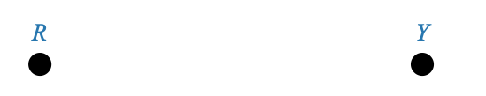 |
| 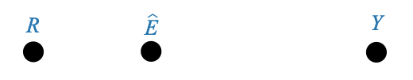 |
| 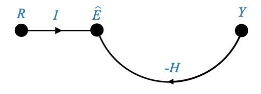 |
Il diagramma precedente può essere rappresentato anche esplicitando il nodo \(B\) e separando i contributi \(H\) e \(-1\). In questo caso è sufficiente la rappresentazione precedente per cogliere la dinamica di cui abbiamo bisogno.

|
E infine otteniamo:

|
Nel grafico del flusso del segnale, il nodo etichettato “R” non ha segnali in entrata. Nella nostra terminologia, un tale nodo senza rami entranti viene definito “nodo di input”.
Questo perché il suo valore è definito esternamente, e quindi il valore del nodo “R” dipende da ciò che gli assegniamo.
Il segnale proveniente da “R” viaggia lungo un ramo, moltiplicandosi per una trasmittanza pari a 1, prima di raggiungere il nodo successivo.
Allo stesso modo, il segnale “Y” viaggia lungo il suo ramo, moltiplicandosi per una trasmittanza di \(-H\), prima di raggiungere il nodo di destinazione. Di conseguenza, il valore in questo nodo è la somma algebrica di questi due segnali.
Nel frattempo, il segnale “\(\hat{E}\)” viaggia lungo un altro ramo, moltiplicandosi per il guadagno “G”, prima di raggiungere la sua destinazione. Di conseguenza, il valore del nodo di output “Y” è dato da $ G $.
Solo per una migliore visualizzazione, se dovessi introdurre un ramo aggiuntivo (che non è presente nello schema a blocchi originale) e etichettarlo “Y”, questa aggiunta non avrebbe alcun impatto sulle equazioni del nostro sistema. Essenzialmente, questa equazione suggerisce \(Y=Y\).
| 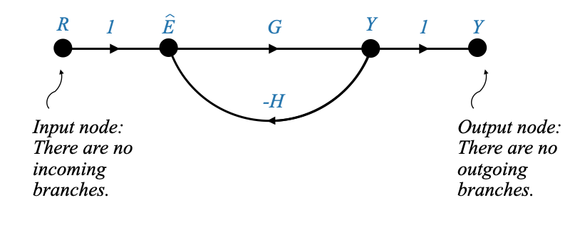 |
Sebbene ciò possa sembrare ridondante, offre un vantaggio in termini di chiarezza. Ora possiamo definirlo un “nodo di output”. Un nodo di output è caratterizzato dall’assenza di rami in uscita, mentre un nodo di input è privo di rami in entrata. L’introduzione di questo nodo di output aiuta a delineare chiaramente l’attributo di interesse.
Un esempio più complesso
|
|

|
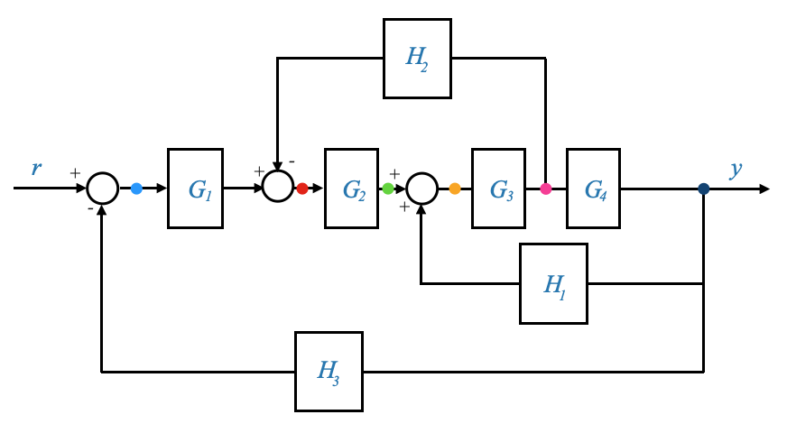 |
| 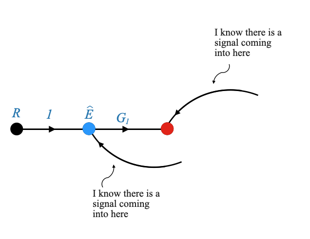 |

|

|

|

|
Presentazione della formula del guadagno di Mason
Con il grafico del flusso del segnale in mano, ora possiamo applicare la formula del guadagno di Mason per determinare la trasmittanza complessiva del sistema (variabile di uscita/variabile di ingresso) o la funzione di trasferimento ad anello chiuso (tutte le variabili sono state trasferite nel dominio di Laplace).
La formula è data da:
\[ \frac{Y(s)}{R(s)} = M(s) = \frac{\sum P_k\Delta_k}{\Delta} \]
Dove: - \(M(s)\) rappresenta la trasmittanza complessiva o la funzione di trasferimento ad anello chiuso.
Entriamo nei dettagli della formula:
Comprendere \(\large \Delta\)
- \(\Delta\) = 1−(somma dei guadagni di tutti i cicli indipendenti) + (somma dei prodotti dei guadagni di coppie di cicli non toccanti) − (somma dei prodotti dei guadagni di triplette di cicli non toccanti) + …
È fondamentale comprendere il concetto di: - “Loop”. Un percorso chiuso in cui un nodo o un ramo viene attraversato una e una sola volta. In altre parole, partendo da qualsiasi punto del percorso, se si seguono le frecce o le direzioni indicate, si dovrebbe ritornare al punto di partenza senza ripercorrere alcuna parte del percorso né rivisitare alcun nodo o ramo. Per esempio:

|
Alcuni punti chiave da notare sui loop:
- La direzione è importante: la traversata deve seguire rigorosamente la direzione indicata dalle frecce nell’SFG.
- Nessuna rivisitazione: nessun nodo o ramo deve essere rivisitato o ritracciato nel ciclo.
- Guadagno del loop: è il prodotto di tutte le trasmittanze (o guadagni) dei rami che costituiscono il loop. Ad esempio, il guadagno del loop, per il loop evidenziato in rosso sopra, è: \(G_2\times G_3\times -H_2\)
- “Loop indipendenti”: I loop indipendenti sono loop in cui ogni loop ha almeno qualcosa (un nodo o un ramo) diverso dagli altri loop. Se stai considerando \(X\) loop come indipendenti, quindi tutti questi loop dovrebbero avere qualche elemento che li differenzia dagli altri loop nel set. Quando si identifica un insieme di loop indipendenti in un grafico del flusso del segnale, ogni loop in quell’insieme dovrebbe avere almeno un nodo o ramo univoco che non sia condiviso con nessun altro loop in quell’insieme.
Ad esempio, nel nostro grafico del flusso del segnale ci sono tre cicli indipendenti. Hanno almeno un nodo o un ramo diverso.
- “Anelli non toccanti.” Due anelli sono considerati non toccanti se non condividono alcun nodo o ramo comune. Questa distinzione è fondamentale quando si applica la formula del guadagno di Mason.
Capire \(P_k\)
- \(P_k\) indica il guadagno del \(k\)-esimo percorso in avanti.
- \(k\) è il numero di percorsi diretti.
Ad esempio, \(P_1\) è il guadagno del primo percorso in avanti. Un percorso in avanti è il percorso che porta dal nodo di input al nodo di output.

|
In questo esempio, esiste un solo modo per viaggiare da \(R\) a \(Y\). Non esiste un percorso alternativo in avanti e quindi esiste uno e solo \(P_1\).
Il guadagno è quindi: $P_1 = G_1 G_2 G_3 G_4 $
Comprendere \(\Delta_k\)
\(\Delta_k\) è il valore di \(\Delta\) quando calcolato per il sistema escludendo (“non toccando”) il \(k\)-esimo percorso in avanti. In termini più semplici, \(\Delta_k\) viene calcolato utilizzando la stessa formula di \(\Delta\) ma ignorando tutti i cicli che toccano o si intersecano con il percorso in avanti \(k\)-esimo.
Per spiegare ulteriormente:
Percorso in avanti: Un percorso in avanti è un attraversamento dal nodo di input al nodo di output nella direzione delle frecce senza alcuna ripetizione di nodi o rami. Il k-esimo percorso in avanti si riferisce a uno specifico percorso in avanti su cui ci stiamo concentrando.
Non toccare il k-esimo percorso in avanti: Ciò significa che nel calcolo di \(\Delta_k\), escludiamo tutti i loop che hanno un nodo o un ramo in comune con il k-esimo percorso in avanti.
Usiamo la stessa definizione che abbiamo dato per \(\Delta\) ma tutti i termini non devono “toccare” il \(k-\)esimo percorso di andata, cioè non hanno nulla in comune (ramo o nodo) con $k- $esimo percorso in avanti.
Per esempio:
\(\Delta_1\) = 1 - (somma dei guadagni di tutti i loop indipendenti che non toccano il 1° percorso in avanti) + (somma dei prodotti dei guadagni di coppie di loop che non si toccano che non toccano il 1° percorso in avanti) − (somma dei prodotti di guadagno di triplette di anelli che non si toccano non toccano il primo percorso in avanti) + …
Applichiamo tutto questo al grafico del flusso del segnale:
| 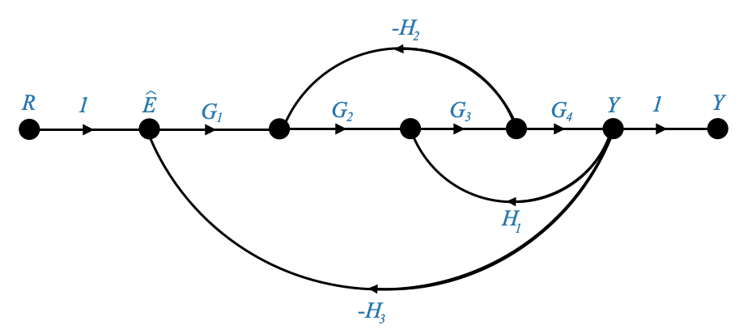 |
- Prima di tutto dobbiamo identificare il valore di \(k\), che in questo caso è 1. Un nodo o un ramo infatti devono essere attraversati una e una sola volta.
\[ \frac{Y(s)}{R(s)} = M(s) = \frac{\sum P_k\Delta_k}{\Delta} = \frac{P_1\Delta_1}{\Delta} \]
- \(\Delta\) = 1−(somma dei guadagni di tutti i cicli indipendenti) + (somma dei prodotti dei guadagni di coppie di cicli non toccanti) − (somma dei prodotti dei guadagni di triplette di cicli non toccanti) + …
\(\Delta = 1 − \Big[ \Big( -G_2G_3H_2 \Big) + \Big(G_3G_4H_1 \Big) + \Big(-G_1G_2G_3G_4H_3 \Big)\Big]\)
Si noti che non ci sono coppie di anelli che non si toccano. Almeno un nodo o un ramo è comune a tutti i circuiti. Poiché non ci sono coppie, non ci sono terzine, ecc.
-\(\Delta_1\)
\(\Delta_1=1\).
Tutti i loop hanno qualcosa in comune con il percorso in avanti.
-\(P_1\)
$P_1 = SOL_1 SOL_2 SOL_3 SOL_4 $
E abbiamo tutto ciò di cui abbiamo bisogno per scrivere la funzione di trasferimento ad anello chiuso complessiva sul sistema.
Esempio
| 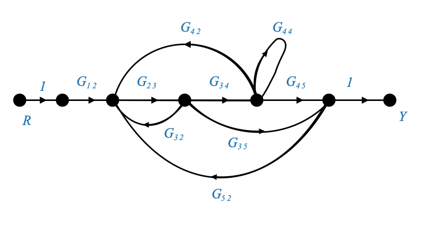 |
\[ \frac{Y(s)}{R(s)} = M(s) = \frac{\sum P_k\Delta_k}{\Delta} \]
\[k=2\]

|
\(P_1 = SOL_{12}sol_{23}sol_{34}sol_{45}\)
\(P_2 = SOL_{12}sol_{23}sol_{35}\)
Tieni presente che \(G_{44}\) è un ciclo chiuso, quindi non può essere incluso.
Ci sono 5 cicli:
| 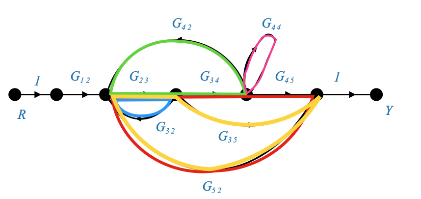 |
E possiamo calcolare i guadagni di loop per questi loop.
Tieni presente che \(G_{34},G_{45},G_{35}\) non è un ciclo perché la direzione è importante!.
Ci sono due paia di anelli non toccanti.
Il primo è:
E il suo guadagno è: \(G_{23}G_{32}G_{44}\).
Il secondo è:E il suo guadagno è: \(G_{23}G_{35}G_{52}\).
E dobbiamo riassumerli nella formula \(\Delta\)
Nessuna terzina.
Finalmente: - \(\Delta_1 = 1\) perché tutti i loop toccano il percorso in avanti. - \(\Delta_2 = 1-G_{44}\) perché è l’unico loop che non tocca il 2° percorso in avanti.
Abbiamo tutti gli elementi per calcolare la formula del guadagno di Mason e ottenere la funzione di trasferimento ad anello chiuso.
Cos’è il self loop?
Un self-loop, nel contesto dei grafici del flusso del segnale, si riferisce a un loop di feedback in cui un segnale o una variabile si influenza direttamente, spesso attraverso qualche trasformazione. In sostanza, una parte dell’output viene restituita direttamente al proprio input.
Il secondo è:| 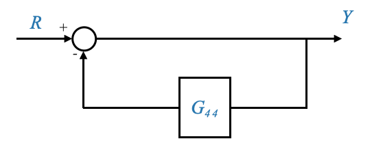 |
Analizziamolo:
- Hai un blocco (o sistema) con un input e un output.
- L’uscita viene restituita all’ingresso tramite un sistema di feedback o guadagno.
- All’ingresso è presente una giunzione di somma che combina l’ingresso originale con il feedback dall’uscita.